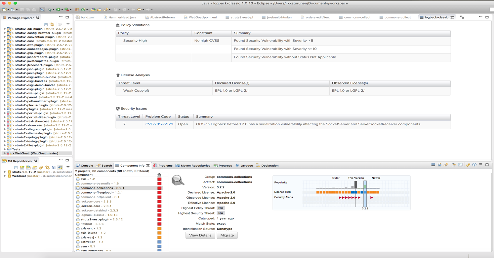

Sonatype
Sonatype Nexus是一個倉庫管理軟件，支援Maven、Docker、Bower、PyPI、Yum等類型倉庫。使用Maven管理依賴的Java程式員一定不陌生，搭建Maven私服基本是用這個。注意:3.x版本才支援docker。他還提供了強大的倉庫管理功能，構件搜索功能，它基於REST，友好的UI是一個extjs的REST用戶端，它佔用較少的記憶體，基於簡單檔案系統而非資料庫。
目前有很多企業組織使用了一些工具依賴於Maven倉庫，但他們並沒有採用一個真正的倉庫管理器，這對於整個管理的層面而言是重要且不可或缺的一環，Sonatype Nexus就剛好擔任起這個種要的腳色。以下將說明幾個使用Sonatype Nexus的優勢所在。
這相當簡單
Sonatype可以直接地替最基礎工作(infra)的作業人員提供最好且最方便的管理作業!
可以建立公共倉庫
如果是一個開源專案，或者你將軟體發佈到公共環境，Nexus可以是一個你用來為外部使用者提供構件服務的工具。如果你使用Nexus，它可以被配置成一個暴露在公共世界的宿主倉庫，你就可以使用Maven的打包和裝配能力，以及Maven倉庫的結構，來使得一次發佈變得非常的簡單。而且，這不僅僅正對於JAR文件和Java web應用；Maven倉庫可以存儲任何種類的構件。如果你正編寫一些Java類庫，將其發佈到你自己的Nexus實例中，然後提供公共倉庫服務，就可以讓人們更容易的馬上開始使用的的代碼。
可以建立本地內部倉庫
你可以使用Nexus，將工作專案分隔成不同的模組，每個模組都依賴於存儲在Nexus倉庫中的構件。這麼做之後，工程師之間可以通過基於Nexus交換已編譯的snapshot和release構件來協作。換句話說，你不需要讓沒個開發者簽出巨大的包含整個組織代碼的多模組專案。組織中的每個小組可以發佈snapshot構件至本地Nexus，從而每個小組可以維護一個隻包含它負責代碼的專案結構。
能夠部署協力廠商構件
若希望能夠基於開來源資料庫工作，如MySQL或者Postgres，但是企業有不同的需求，例如和Oracle有一個長期的支持合同。因此，你有一系列JAR檔不能夠從公共倉庫獲得。你需要將這些構件部署到倉庫中，然後配置後去讀取該倉庫。
你不用為此手工編寫一些POM，只要下載Nexus，然後花兩三分鐘時間使用這個免費，功能強大的工具來創建一個倉庫，部署協力廠商構件。Nexus提供了直觀的上傳介面，你可以使用它上傳任意JAR檔，然後在你專案依賴中引用它。
控制和審計
Nexus提供了更多針對組織中使用的構件進行更多的監管，例如對於架構師，或者一個架構小組需要建立組織使用的基線標準，以節省更多的時間
加速構建
Nexus可以有效且大幅的節省75%的時間，在構建倉庫中不同模組與項目的構建時就是最好的工具
